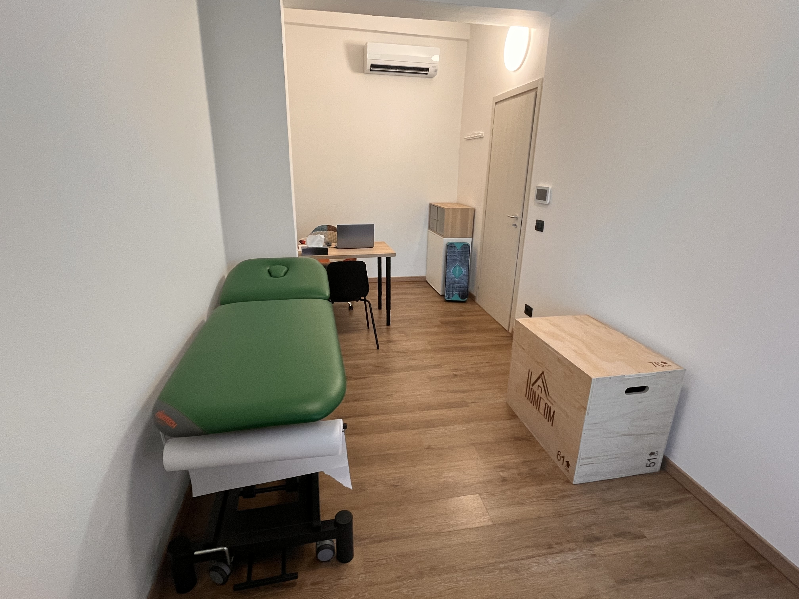
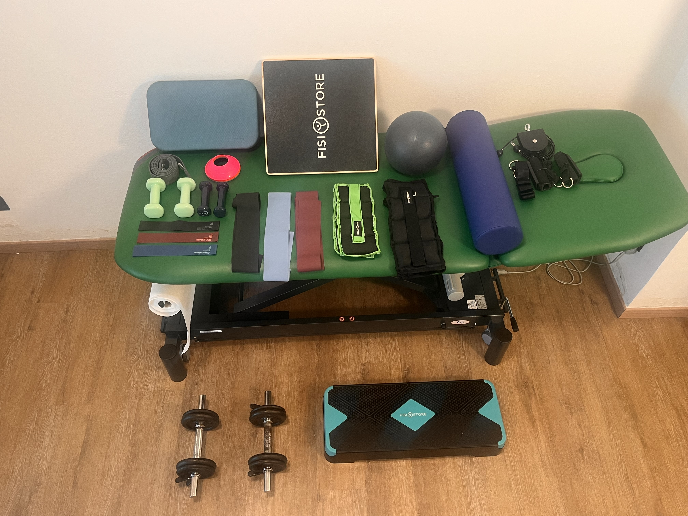

Dott. Andrea Tarozzi
Fisioterapista
Chi sono
Benvenuto,
Mi chiamo Andrea Tarozzi e sono un Fisioterapista attivo in ambito ospedaliero, ambulatoriale e domiciliare. Il mio percorso professionale nasce da una profonda passione per il movimento umano: dopo la laurea in Scienze Motorie, ho conseguito nel 2023 la laurea in Fisioterapia presso l’Università di Bologna. Questa doppia formazione mi permette di avere una visione d'insieme che va dalla riabilitazione clinica al ritorno all'attività fisica.
Credo fermamente nella formazione continua. Mi sono specializzato nel trattamento delle problematiche muscolo-scheletriche attraverso il concetto Maitland e in ambito neurologico col concetto Bobath. La mia curiosità verso l'innovazione mi ha portato a specializzarmi anche nella riabilitazione robotica — utilizzando tecnologie d’avanguardia come Lokomat, Armeo e Moonwalker — e nella riabilitazione in piscina (idrokinesiterapia) secondo il metodo ANIK.
Per offrire un supporto ancora più completo, sto attualmente approfondendo il mondo del fitness attraverso il percorso per Personal Trainer di Project Invictus. Il mio obiettivo è quello di fornire consigli pratici e strategie efficaci per mantenere i risultati ottenuti e migliorare la performance anche dopo la conclusione del percorso terapeutico insieme. Mi definisco una persona empatica, che mette al centro il rapporto umano. Attraverso l’ascolto attivo e una valutazione accurata, definiremo insieme un percorso riabilitativo personalizzato a 360°. Non ci concentreremo solo sulla problematica fisica, ma considereremo l’impatto psico-sociale della patologia, ponendo obiettivi condivisi per garantire un ritorno alla tua quotidianità.



Trattamenti
L'intervento chirurgico è solo il primo passo verso la guarigione. La fase successiva, quella riabilitativa, è fondamentale per favorire un recupero della mobilità articolare, della forza muscolare, della funzionalità rispettando i tempi di guarigione fisiologici del distretto corporeo operato.
Esempi di interventi e patologie che beneficiano della fisioterapia post-chirurgica:
- Protesi d'anca e di ginocchio
- Ricostruzione del legamento crociato anteriore (LCA)
- Meniscectomia e altre chirurgie del ginocchio
- Fratture trattate chirurgicamente (con placche, viti o chiodi)
- Chirurgia della spalla (cuffia dei rotatori, stabilizzazione, protesi)
- Interventi al rachide (ernia del disco, artrodesi, decompressione)
- Chirurgia del piede e della caviglia (alluce valgo, fratture, ricostruzioni legamentose)
- Interventi al polso e alla mano (fratture, tunnel carpale, tendini)
La riabilitazione muscoloscheletrica è un percorso terapeutico mirato al recupero di forza, mobilità e funzionalità di muscoli, articolazioni e tessuti connettivi. Che si tratti di infortuni acuti, traumi o patologie croniche, il mio approccio integra l'esercizio terapeutico personalizzato con le tecniche manuali cercando di modulare il dolore e ripristinare la forza, mobilità e l'efficienza del corpo permettendo un ritorno sicuro e duraturo alle attività quotidiane e sportive.
Trattamento indicato per lesioni muscolo-legamentose-tendinee, fratture, distorsioni, traumi e mal di schiena.
La riabilitazione neurologica è un percorso fisioterapico specialistico dedicato al recupero della funzionalità della persona a seguito di danni a livello del sistema nervoso centrale o periferico. L'obiettivo non è solo il recupero motorio, ma il miglioramento della qualità della vita e dell'autonomia.
Il trattamento è indicato per persone affette da: esiti di ictus, sclerosi multiple, morbo di Parkinson, lesioni midollari, traumi cranici e patologie del sistema nervoso periferico.
Grazie all'integrazione di sistemi robotici avanzati, è possibile offrire percorsi di recupero ad alta intensità, estremamente precisi e personalizzati, fondamentali per chi è affetto da problematiche neurologiche o motorie complesse. La tecnologia robotica permette di:
- aumentare il volume di lavoro
- aumentare la precisione nei movimenti
- ottenere feedback immediati
- avvalersi di attività ludiche su schermo
Le tecnologie a disposizione sono:
- Lokomat: L'esoscheletro per l'allenamento del cammino che permette di riprodurre uno schema del passo fisiologico e fluido, anche in pazienti con gravi compromissioni motorie.
- Armeo: Un sistema dedicato al recupero funzionale dell'arto superiore, che supporta il peso del braccio facilitando esercizi specifici per la mano e la spalla in un ambiente virtuale stimolante.
- Moonwalker: Un supporto dinamico del peso corporeo che garantisce sicurezza totale durante l'allenamento dell'equilibrio e della deambulazione, eliminando il rischio di cadute.
Trattamenti indicati per: patologie neurologiche e degenerative che compromettono il cammino, l'equilibrio e la funzionalità dell'arto superiore.
Presso: Villa Bellombra - Via Casteldebole 10/7, Bologna
La riabilitazione in piscina (Idrokinesiterapia) è una terapia che sfrutta le proprietà fisiche dell'acqua per scopi terapeutici. Non si tratta di semplice nuoto, ma di un protocollo riabilitativo eseguito in vasca riscaldata, dove l'acqua diventa un alleato fondamentale per ridurre i tempi di recupero e migliorare la qualità del movimento. Si sfruttano le proprietà fisiche dell'acqua per favorire una riduzione del peso corporeo, gestione del carico articolare e impostare un lavoro personalizzato sul recupero della forza, coordinazione ed equilibrio in sicurezza.
È indicata per persone con problematiche muscoloscheletriche, neurologiche o post-traumatiche/chirurgiche.
Presso: Villa Bellombra - Via Casteldebole 10/7, Bologna